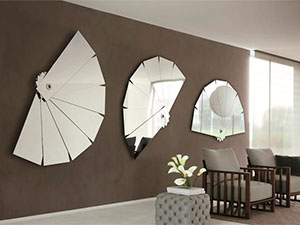

Хотя зеркало давно стало неотъемлемым атрибутом любой квартиры, у многих оно всё еще ассоциируется с косметическим аксессуаром. На самом же деле функционал современных зеркал гораздо шире и интереснее. Разобраться в этом вопросе, в том числе развеять устаревшие стереотипы и сделать правильное зеркальное оформление, помогут советы наших специалистов.
Зеркало в спальне
Зеркало в спальне, прежде всего, имеет функциональное значение. Поэтому, его устанавливают на самых доступных местах: тумбочках, дверцах шкафа, стене. А если следовать модным тенденциям, то большое зеркало в красивой раме следует разместить над изголовьем кровати. Эксперты Фэн-Шуя считают же, что изображения спящего человек должно отображаться в зеркале на протяжении всей ночи, следовательно, поставить его необходимо напротив кровати. Безусловно, где бы вы ни установили зеркальное полотно, оно будет выполнять и второстепенные функции, в том числе расширение пространства, добавление визуальной легкости и пр.
Зеркало в прихожей
Еще недавно зеркало в прихожей выполняло исключительно практическую функцию, но сегодня у него появилось и интерьерное назначение. В прихожей рекомендуется устанавливать широкое зеркало в полный рост. Это позволяет не только любоваться на себя перед выходом во двор, но и расширить пространство узкого помещения. Если Вы пользуетесь шкафом-купе, то будет уместно поставить зеркальные двери. В светлых прихожих хорошим решением станет комбинация зеркальной и матовой поверхности, а в тёмных помещениях прекрасно смотрится насыщенный боковой свет возле зеркала.
Зеркало в гостиной
В гостиной зеркалами украшаются любые стены, иногда, противоположные. В тёмном помещении эксперты советуют оборудовать зеркальное фальш-окно. Такое решение существенно расширит и осветлит комнату. Украсить окно можно красивыми шторами и деревянной рамкой. Важно помнить, что комната не должна быть перегружена предметами. Чем меньше нагромождён интерьер, тем больше зеркал можно установить.
Одним из свежих зеркальных решений в гостиной является большое прямоугольное зеркало в тяжелой фигурной раме. Перед таким полотном можно установить красивый аксессуар, например, вазу с цветами или фруктами. Получится прекрасная живописная композиция. Ярко и необычно смотрится зеркальная мебель в интерьере гостиной комнаты. Шкафы, тумбочки, столы — такие предметы исключительно вписываются в любых современных помещениях.
Общие советы
Прежде чем устанавливать зеркала в комнате, следует определиться с тем, чего хотите от помещения. Например, если планируете визуально расширить пространство, лучшего всего развешать большие горизонтальные зеркала. Именно они способны превратить тесную комнатку в респектабельные апартаменты. Если же в комнате есть окно, зеркало следует расположить так, чтобы оно отражалось. Таким образом, не только расширятся границы помещения, но и появится еще один источник света.
Дизайн ванной должен предусматривать, как минимум, одно большое зеркало. Это сделает комнату не только просторнее, но и уютнее. Ведь именно отражающаяся улыбка программирует нам хорошее настроение на весь день.
Источник: mebelshop.com